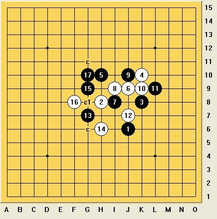

关于帮别人行棋
#1 <font color="Gray">关于帮别人行棋</font>作者：罔两 发表时间：2013-7-16 9:19:55
我很不明白一点，既然是对局！随意帮对手行棋，这是什么道理？
就算是地毯了，可以在自己落子后发劝降，发地毯谱，在自己没有地毯的情况下，帮人行棋，并且再发劝降。然后再重新回到前面落子，我不明白这是在干嘛？
那对局的意义何在？个人行棋权力是每个对局者的基本权益。如果可以随意剥夺，那怎么不一个人到下面去拆棋呀~~~
ShowPost.asp?PageIndex=3&ThreadID=19876
［此帖子已被 屏蔽 在 2013-10-1 6:12:03 编辑过］
#2 Re:关于帮别人行棋作者：釣鱼岛岛主 发表时间：2013-7-16 9:23:22
裁判说了,前面几贴你可以视为无效,也可以认同,从25楼开始,继续回棋.你到底还想怎么样?????????????????#3 Re:关于帮别人行棋作者：恺恺 发表时间：2013-7-16 9:27:42
围观#4 Re:关于帮别人行棋作者：釣鱼岛岛主 发表时间：2013-7-16 9:31:08
既然你选择了不认同,并提出来了,然后我又按裁判的意思重新回棋,你又有新的说话,你觉得又有意义>/?
#5 Re:关于帮别人行棋作者：踵酃 发表时间：2013-7-16 9:42:24
各位选手，稍安勿躁。
对规则有不瞒，请到》》》 意见、建议、申诉楼，》》》与屏蔽裁判长交流。
建议大家用其他词代替 “劝降”。
［此帖子已被 踵酃 在 2013-7-16 9:43:11 编辑过］
#6 Re:关于帮别人行棋作者：屏蔽 发表时间：2013-7-16 9:56:54
单纯对于比赛规则的意见或申诉，可以直接去置顶的申诉楼按规程发言。相对地，我将不参考任何的实际对局情况。#7 Re:关于帮别人行棋作者：罔两 发表时间：2013-7-16 9:57:26
裁判在帖子里面做了任何回复没？我没看到，你有看到嘛？
我说的很清楚勒，你地毯了，你在你自己的棋行完之后，发地毯谱，劝降！我无可非议，但是你行棋后，并明确表示，你在回棋之时，并没有地毯干净，没有地毯干净。请问这样的情况你为何帮人落子，而且是活三，怎么行棋，是我的权力。冲四帮档，因为冲四只有一个防点的选择。但是活三不同防点都会有不同的杀法，就算你地毯出来了，不代表别人就拆出来了，因为你拆出来了，你就帮人行棋。你可以接受，但是我不能接受。我此贴，只是针对我个**益来说，你觉得我不应该，那你自己完全可以按正常情况来行棋，并在你正常行棋后发帖做表述。但是你发帖帮人行棋后，你拆出地毯，再跟帖说劝降，并且无地毯贴跟随，不明白是要干嘛。。。。
#8 Re:关于帮别人行棋作者：釣鱼岛岛主 发表时间：2013-7-16 10:03:19

没地毯干净,就是中间那个18手啊,所以我帮挡的也是情理之中的中间那手啊,地毯后我劝降.如果因为劝降二字,让你面子上过不去,那是我的错.
如果你认为,你18手可以挡上面或挡下面,那么你也有权利尝试,没人阻上你.
#9 Re:关于帮别人行棋作者：釣鱼岛岛主 发表时间：2013-7-16 10:05:08
但我想知道,那盘棋你想怎么处理下去?还是打算打这里争吵到底?维护你所谓的权利?#10 Re:关于帮别人行棋作者：罔两 发表时间：2013-7-16 10:35:27
这里你的截图什么时候发的？这里你自己知道，至于我怎么回，是我的权力，请问你为什么要落我的子呢？
什么叫面子挂不去？我说了，你行棋完结，发地毯谱。我无可非议~~~ 未必我没下过论坛战？有点搞笑。。
简单的道理，是我行棋，为什么你要帮我行棋。就这么简单~~~
#11 Re:关于帮别人行棋作者：釣鱼岛岛主 发表时间：2013-7-16 10:38:11
“裁判在帖子里面做了任何回复没？我没看到，你有看到嘛？”
［此帖子已被 釣鱼岛岛主 在 2013-7-16 10:45:17 编辑过］
#12 Re:关于帮别人行棋作者：釣鱼岛岛主 发表时间：2013-7-16 10:41:37
棋盘外,你贴也发了,该争的权利,你也争到了,,,我觉得棋盘上,你可以继续回棋了.....你认为呢?
#13 Re:关于帮别人行棋作者：罔两 发表时间：2013-7-16 10:44:11
那意思就是说，什么事情都可以单方面说话落。简单的说你可以无视对手行棋，也可以完全无视对手的存在。
而且最搞笑的一点，前面行棋我也是大概一天才回棋，到了你帮我行棋之后，你这个时候这样急切的去问裁判这个时候谁行棋，你帮我落子的时候，你没想过这个时候该谁行棋嘛？ 然后去问裁判该谁行棋？
#14 Re:关于帮别人行棋作者：釣鱼岛岛主 发表时间：2013-7-16 10:47:20
因为我高估了你的棋艺,挡上挡下理论上不可能的事,你却存在可能
也因为我高估了你的棋品,面对这种鸡毛算皮的小事,还好意思发贴说什么权利
#15 Re:关于帮别人行棋作者：罔两 发表时间：2013-7-16 10:48:13
别这样激动的编辑帖子嘛， 我有说你找裁判错了嘛？还编辑帖子。。 哈哈 ！！
#16 Re:关于帮别人行棋作者：釣鱼岛岛主 发表时间：2013-7-16 10:49:43
是的,我编贴了,补充了后面,你可以再发贴说我编贴判负啊#17 Re:关于帮别人行棋作者：罔两 发表时间：2013-7-16 10:53:20
不要这样抬举我，怎么行棋在我。我的权益为什么你要来剥夺。最少我没有这样的情况吧。
我下论坛站，最少我地毯干净了，我行了自己的棋后，发地毯谱告知对家，局面以地毯。
帮档四，我也会在下面只会一声。这叫做尊重！！！
#18 Re:关于帮别人行棋作者：釣鱼岛岛主 发表时间：2013-7-16 11:00:28
那么明朗的局面,讲了一堆的大道理,还谈尊重,你不觉得虚伪吗?
那么微小的问题,发了这么无聊的争吵贴,大谈权利,你不觉得你可悲吗?
如果对战一方是你现实的好朋友,发生类似的问题,如果本局你必胜,我帮挡活三,寻最强一路,你还会浪费大半精力在这棋盘外呈口舌之勇吗?你不觉得你很可笑吗?
#19 Re:关于帮别人行棋作者：釣鱼岛岛主 发表时间：2013-7-16 11:03:22
你可以否认,你的虚伪,可悲和可笑,这是你的权利.
我可以说你虚伪,可悲和可笑,这也是我的权利.
你继续辩吧,我就不奉陪了
#20 Re:关于帮别人行棋作者：罔两 发表时间：2013-7-16 11:07:06
我发这个帖子，最简单的在于，对局大家是在感受思考的过程，并且不管输赢，不管棋力高低，每位选手都有自己的权力，并且每个对局者也都应该明白什么叫尊重对手。如果觉得我说的不对，可以叫大家讨论~~~~~
#21 Re:关于帮别人行棋作者：天涯独行客 发表时间：2013-7-16 16:37:45
个人认为，帮别人挡四，是规则允许的，并无不当，但是在有多个选择的情况下，代替别人行棋，这应该视为违例，哪怕其他点再简单，你不能剥夺别人的行棋权利，强烈建议裁判予以严格判罚！！！！#22 Re:天涯独行客【==Re:关于帮别人行棋==】作者：茗弈七夜 发表时间：2013-7-16 18:09:18
我，如烟，特拉斯需要裁判缺确认的重点在于如何计算时间的问题。你可以说规则上没有规定。那只要我们回棋了，时间都算你的就行了。因为无论是我还是如烟都是有效回棋。你的行为大家有目共睹，你的那种所谓选择在和我的对局中更是体现得淋漓尽致，裁判们也都一目了然的～
#23 None作者：絕版賭徒 发表时间：2013-7-16 18:27:21
［此帖子已被 絕版賭徒 在 2013-7-16 18:30:42 编辑过］
#24 Re:关于帮别人行棋作者：絕版賭徒 发表时间：2013-7-16 18:30:02
我是发表贴，成了回贴，这里删了#25 Re:关于帮别人行棋作者：天涯独行客 发表时间：2013-7-16 18:51:08
欲加之罪何患无辞，你就编吧，大家去看对局记录就是了，我不需要任何解释#26 Re:茗弈七夜【==Re:天涯独行客【==Re:关于帮别人行棋==】==】作者：天涯独行客 发表时间：2013-7-16 19:19:24
七夜兄，你对比赛情况有自己的看法，完全可以向裁判提出来，这个是你的正当权利。
但是你没有道理，一再要做恶意的猜测，蓄意把我说成什么故意弄什么名堂，
有规则在，如果确实是我的错，裁判自然会根据实际情况判罚，用得着你去教裁判怎么做吗？
你不顾事实，就单方面地把我钉上道德的耻辱柱，进行宣判，一再指责攻击，有着必要吗？
#27 Re:关于帮别人行棋作者：茗弈七夜 发表时间：2013-7-16 19:30:42
我并没有你说的那样，这是你在给我欲加之罪。
请你仔细看清所发的内容！我只是要裁判确认两点：第一，你这么做是否是使用的是你自己的时间。
第二：我们回棋帮你挡冲4，你既不认可，也不指出否认。而当我们回棋单走一步，你立刻回棋。
诚如你所说的那样，你有权利在规则没有明确的情况下自由选择是否要别人帮你挡冲四。但你这样的行为至少对我们组的我，特拉斯和如烟造成了回棋上的困扰。因为我们本来都是按照规则在回棋
所以我及时提出这些，也是要裁判确认你这个不做说明是否也是使用的你自己的时间。
这个和道德无关，请不要恶意对我上纲上线。
#28 Re:关于帮别人行棋作者：茗弈七夜 发表时间：2013-7-16 19:38:08
我们一直讨论的是规则，是对比赛中出现的问题进行的讨论。
这些都是对事不对人，相信我所提及的疑问，同组的两位选手也有。
请天涯兄不必在恶意去揣测了。
#29 Re:关于帮别人行棋作者：天涯独行客 发表时间：2013-7-16 19:50:49
那些攻击的话，历历在目，何必掩饰！！我不是傻子
“更为可笑的是：请看天涯和我的对局，之前他主动帮我挡冲4，然后我人可回复了，他也没说什么。而我帮他挡冲4时，他既不说明也不回棋。直到我重新回复只冲一个4，他才回复堵了这个冲4.包括对于掌棋如烟的对局他现在也是如法炮制。
那他这种行为，对于这个大家都默认的潜规则，他自己也没有通过回复表达给对手任何异议。但现在他在比赛中对自己有利时就帮别人挡冲4，而对自己不利时就用这种手段。其行为前后不一致，是否构成违例？是否有投机取巧之嫌？是否可以直接判负？”
“你的行为大家有目共睹，你的那种所谓选择在和我的对局中更是体现得淋漓尽致，裁判们也都一目了然的～”
这些都是你的原话吧，你提出申诉，我没有任何回应，是你们一再用这样的话，攻击我，我才出来解释说明。你不仅恶意揣测我，攻击我，连裁判也绑架了，你能代表裁判？这样说不就是想借裁判之口，误导舆论吗？
#30 Re:关于帮别人行棋作者：茗弈七夜 发表时间：2013-7-16 20:13:50
裁判是公正的，自然会做出公正的判决。什么叫“绑架裁判”，请注意你的言辞。
我是对事不对人：第一，你在一局对局中前后做法不一致，导致我们会被你误导，我当然第一时间叫来裁判。至于如何判罚，是无罪，还是违例，还是判负，由裁判确认。
第二，我们按照规则回复行棋，你却不做任何解释，我必须明确我们和你的对局我们的回棋有效，使用的是你的时间。
#31 Re:关于帮别人行棋作者：天涯独行客 发表时间：2013-7-16 20:27:42
你是你，如烟是如烟，你们两的情况完全不同，请不要混为一谈，你代表不了她，她如果有意见看法，她自然会有交流
你自己误解了，莫名其妙地对我进行猜测，却怪我误导你，好笑不？你们作出了莫名其妙的举动，却要我去做解释，我怎么知道你们误
解啊，就算你闹不明白，你也完全可以到帖子里提出疑问，和我交流，你没有做任何表示，却到论坛到处发帖，说些讽刺挖苦攻击的不
负责任的话，闹了个不亦乐乎，现在却避重就轻，推卸责任，说什么对事不对人
你不守交通规则，撞了人，是不是要被撞的人向你道歉，不该堵了你的路啊？
#32 Re:天涯独行客【==Re:关于帮别人行棋==】作者：茗弈七夜 发表时间：2013-7-16 20:33:22
引用：
原文由 天涯独行客 发表于 2013-7-16 20:27:42 :你是你，如烟是如烟，你们两的情况完全不同，请不要混为一谈，你代表不了她，她如果有意见看法，她自然会有交流
你自己误解了，莫名其妙地对我进行猜测，却怪我误导你，好笑不？你们作出了莫名其妙的举动，却要我去做解释，我怎么知道你们误
解啊，就算你闹不明白，你也完全可以到帖子里提出疑问，和我交流，你没有做任何表示，却到论坛到处发帖，说些讽刺挖苦攻击的不
负责任的话，闹了个不亦乐乎，现在却避重就轻，推卸责任，说什么对事不对人
你不守交通规则，撞了人，是不是要被撞的人向你道歉，不该堵了你的路啊？
还有你的比喻太拙劣了，简直文不对题。你硬要歪曲我的意思，我不会和你做无谓的争辩。
关于规则问题，比赛结束后我们会向餐牌提出建议
#33 Re:关于帮别人行棋作者：茗弈七夜 发表时间：2013-7-16 20:36:06
既然你这样说，那就请如烟如果看见也说两句吧，公道自在人心！#34 Re:关于帮别人行棋作者：天涯独行客 发表时间：2013-7-16 20:48:42
在行棋过程中我没有做任何表示，没有向谁提出过要求对自己有利的判罚，裁判也没有因此对你们做出什么判罚，他们都一再告诉你，
我不回棋耽误的是我的时间，和你无关，你还不依不饶地去申诉，谴责我，我用自己的时间拆棋，妨碍你什么了，你凭啥指责我
#35 Re:关于帮别人行棋作者：茗弈七夜 发表时间：2013-7-16 20:51:50
因为你之后回了啊，我申诉是裁判最初没有给出明确的答复。你在我们再次回棋只冲一个4的时候你马上回棋。如果我不及时确认清楚，到时候你完全可以赖账，说我没有及时指出。参加过比赛的人都知道，有问题第一时间找裁判。至于究竟如何，裁判自然会处理。这并没有不依不饶，而是必须确认清楚。这毕竟是网战，不是实战#36 Re:关于帮别人行棋作者：天涯独行客 发表时间：2013-7-16 22:34:54
晕死，七夜兄，人都有可能做错事，你无端猜测误解了人，主动解释清楚就行了，犯得着为了一时的错误，去反复纠结，一而再再而三
地胡搅蛮缠吗？
你可以申诉，裁判都已经给你解释了，说我拆棋是算我的时间，没有碍着你什么时，你为什么要一再发挥你的想象力，指责我恶意损害
你的利益？
这盘棋力早就是必败的了，我需要用盘外招，去害你超时吗？再说了，所有的裁判都说这用的是我的时间啊！
#37 Re:关于帮别人行棋作者：茗弈七夜 发表时间：2013-7-17 23:16:14
事实就是天涯迟迟不回棋，回棋也不按照我回帮自己的对手挡冲4复的坐标，以及如烟帮挡冲4后的来回。一定等到我们重新回复只冲4他才回。
这说明什么呢？而且退一步说：即使他不认可我们帮其挡冲4，大可以说明。，不然根据之前他帮我挡冲4，其他选手也基本都这么做了。他什么也不说，我和如烟当然认为其默认了。
然后我第一时间发帖叫来了裁判。我的意思很明确了就两点：第一：我们有效回棋，时间是否计算天涯？
第二，天涯在和我对局中对于冲4帮挡这一情况前后做法不一致，是否构成违例？或者直接判负？
现在天涯还居然说我和如烟都回复了两次，说我们“悔棋”，实际是我们回复了两次。前一次帮他挡冲4，后一次不帮。
我再分析一下：（1）就算天涯事后辩解说，他就是在和我那盘对局中先要帮我挡冲4，而我没有提出任何异己，在他帮我挡了以后继续行棋了，是我自己认可的。—— 这点OK说得过去。
（2）就算天涯说自己忘记回复了，或者拆棋慢，那我们都已经帮挡冲4了，我回了坐标视同行棋，如烟回的更是棋盘。那他为何之后回复的不是按照我们的回复继续行棋。而是在我们之后又回复的不帮他挡冲4，只行一步棋的后面直接马上回棋挡了冲4.
而且在这个时候天涯依然什么也没说。他既没有说我们回复两次有问题，也没有说不让我们帮他挡冲4，更没有叫来裁判说我们回复两次的事情。原因何在呢？——分析到这里想必大家都笑了~一个人的第一反应往往是最真实的内心写照，无论他之后如何去掩饰。
（3）那我和如烟还有广大棋友是不是可以这么去理解，我们之前的有效回棋他置之不理，而之后的回棋他却回的很快。
如果他就是“只允许自己帮别人挡冲4，而不允许我们帮他挡冲4”那也没什么，规则之内嘛~但大家请注意，他在回复时没写这一句。
就凭这一点我才找的裁判，这就是违例啊！
总结：1.按照规则，天涯应该回复我们之前的行棋。
2.如果他因为不要我们帮他挡冲4，而去回复我们之后的行棋，他至少应当说明他不需要我们这么做。
3.他也一直没有找裁判反映这个问题，而是在我反映了，裁判处理了，如烟也说话了，他现在才说了一句是我们悔棋。
最后请大家留意一点：天涯最初申诉时，说的两句话非常有意思：第一，他说我“绑架裁规定判”，还说我“恶意中伤”
第二，他承认了自己之前帮我挡冲4，也说了规则没有明确规定，所以他可以自由选择不让我和如烟帮他挡冲
.
但请注意两点：在这个过程中：他至始至终没有向裁判提出过我们回复两次的事情，更没有在我或者是如烟的对局里说明他不需要我们帮他挡冲4.包括他一直在叫屈，要裁判还他清白，也一直没说出不要我们帮他挡冲4这句话。
他的回棋用实际行动证明了他不想我们帮他挡冲4，这是板上钉钉的事实。
但从头到尾他都没有强调过这一点，试问这符合逻辑吗？再问;如果我和如烟不说，他会主动说吗？
所以，大家都明白了吧，是不是又该要笑了~
#38 Re:关于帮别人行棋作者：天涯独行客 发表时间：2013-7-17 23:50:33
你自己都承认在整个过程我什么都没有说，你还能说出我这么多的想法来？你是我肚子里的蛔虫，还是未卜先知的神仙啊，
拿点真正的证据出来吧，别通篇都是想象，你不累吗？
棋输了没有关系，别再输了自己的人格好么？
鉴于比赛已经结束，本人也有自己的事业要去忙，我所有的话都已经说完，证据也提供了，对于此事，我不再做任何回应，你一个人继续自编自导地表演了，恕不奉陪！！
［ 茗弈七夜同学于 2013-7-18 0:31:37 时花50金币砸了你一个臭鸡蛋］
#39 Re:关于帮别人行棋作者：茗弈七夜 发表时间：2013-7-18 0:32:29
赏你个鸡蛋，哈哈~我也不多说了，大家都看得懂的